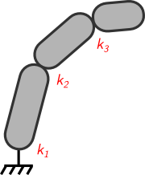
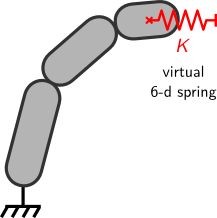
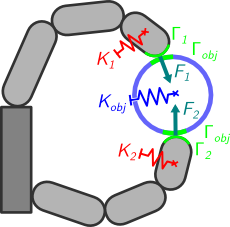

Stiffness
In the section about disturbances, we approach the problem of grasp robustness through the research of tightening forces. Interestingly enough, in our hands, tightening is linked to stiffness. Indeed, when we squeeze an object, our fingers not only apply larger contact forces, they also become tenser, more rigid: their stiffness increases. In other words, tightening causes stiffness. The opposite is not true: we can make our fingers stiff without larger contact forces, or even without having an object in grasp. To do so, we contract simultaneously the flexor and extensor muscles of the fingers (located mostly in the forearm).
In both cases, whether it comes with tightening or not, finger stiffness has an effect on the dynamic behavior of the object, that is to say on the way it moves in response to forces. This is easy to feel: when we make our fingers stiff, the object in grasp becomes less easy to move with the other hand. By adjusting the intensity of tightening or muscle co-contraction, we produce grasps that are more or less compliant, that is to say the object is more or less easy to move with the other hand (compliance is the inverse of stiffness).
This capability, controlling the object's dynamic behavior through finger stiffness, is worth trying to replicate in a robot hand. It is a sort of stiffness control, except that in classical stiffness control, contact forces rather than finger stiffnesses are used to produce the desired dynamic behavior of the object, namely an elastic behavior around some position of reference, in translation and rotation (hence the term stiffness control).
In order to realize this sort of stiffness control, two things are necessary. First, we must be able to adjust the stiffness of the fingers. This is possible and based on the concept of active stiffness, as explained below. Second, we must know the relationship between the stiffness of the fingers and the dynamic behavior of the object. This relationship isn't known outside of the simplified case where the relative motion between the object and the fingertips is negligible. We found it in the case where rolling at the contact points is non-negligible.
The first thing to know about stiffness in a robot hand is that it is independant from tightening: unlike our fingers, robotic fingers can squeeze an object harder without becoming stiffer. To make them stiffer, we can use motor control as follows: if the fingers are tendon-driven, co-actuating the flexor and extensor tendons emulates muscle co-contraction; and if the fingers are torque-driven, adjusting the servo gains changes joint stiffness. For instance, let say for simplicity's sake that each joint is torque-controlled by a trivial proportional regulator, τ = k (q[d] − q). The servo gain k represents the stiffness of the joint around the desired articular position q[d]. So stiffness control of the object through finger stiffness, is choosing the servo gains in order to achieve a desired stiffness of the object around some desired position.
More precisely, in a robot hand, each finger has a certain stiffness, characteristic of its elastic behavior. This stiffness is termed passive when it results from the hand's construction and active when it comes from motor control.
- Passive stiffness
- Passive stiffness results from mechanical reasons, such as actuator compliance, elasticity in the transmission chain, fingertip materials, or the use of return springs. It also stems from structural properties such as couplings between joints or between fingers, through underactuation for instance. It can't be easily modified, at least not when the hand is in operation.
- Active stiffness
- Active stiffness can be changed more easily. As explained above, it results from motor control. To adjust it, we need to make sure that the control algorithms in the hand's embedded electronics can specify arbitrarily the servo gains they use (or the intensity of tendon co-actuation).
The stiffness of each robotic finger can be described by a particular matrix, whose diagonal terms are the principal stiffness coefficients of the joints, and off-diagonal terms are stiffness couplings between the joints. For instance, for a finger with three joints and no couplings:
| k = |
⎛ ⎜ ⎜ ⎝ |
|
⎞ ⎟ ⎟ ⎠ |
This matrix is called the joint stiffness matrix of the finger. It is symmetric definite-positive and maps infinitesimal variations in joint position to infinitesimal variations in joint torque (this is actually its definition): dτ = − k dq.
Finger stiffness can also be described in the cartesian space at distal phalanx level, rather than in the joint space. The matrix used for that is called the cartesian stiffness matrix of the finger, and it represents the elastic behavior of a generalized spring, working in translation and rotation in the cartesian space at phalanx level, as illustrated below.
| ⇒ |  | ||||||||||||||||||||||||||
|
|
||||||||||||||||||||||||||
The blocks Ktr and Krot are the linear and angular stiffness matrices of the generalized spring, and the two Kcpl are possible couplings between these directions (not necessarily the same despite the notation). The whole matrix maps infinitesimal variations in the linear and angular position of the distal phalanx (dX) to infinitesimal variations in the force and moment that the distal phalanx applies in response to the change of position (restoring force, dF):
| dF = − K dX | with dF = |
⎛ ⎜ ⎝ |
df dm |
⎞ ⎟ ⎠ |
and dX = |
⎛ ⎜ ⎝ |
dx dθ |
⎞ ⎟ ⎠ |
all quantities being written in a frame attached to the distal phalanx. The relationship between the joint and cartesian stiffness matrices is known since the early 2000s as follows:
k = JT K J + k′ with k′ = f (dJ, F)
J is the jacobian matrix of the finger of course, so this relationship is more than a standard change-of-frame formula between joint coordinates and cartesian coordinates (k ≠ JT K J). The additional term k′ depends on the change in finger geometry which comes with the variation in distal phalanx position (differential of the jacobian matrix dJ), and on the loading of the finger (contact force F).
Now, when an object is grasped by several fingers, the stiffnesses of the fingers induce an elastic dynamic behavior of the object, that is to say a total resulting stiffness at object level, in the cartesian space, as illustrated below.
This object stiffness can be described by a cartesian stiffness matrix Kobj of the same form as the cartesian stiffness matrices of the fingers K1, …, Kn (with n the number of fingers); that is to say, two 3 × 3 blocks for linear and angular stiffnesses and two 3 × 3 blocks for couplings. This matrix also represents the dynamic behavior of a generalized spring:
| dFobj = − Kobj dXobj | with dFobj = |
⎛ ⎜ ⎝ |
dfobj dmobj |
⎞ ⎟ ⎠ |
and dXobj = |
⎛ ⎜ ⎝ |
dxobj dθobj |
⎞ ⎟ ⎠ |
dXobj represents an infinitesimal variation of the linear and angular position of the object, dFobj an infinitesimal variation of the total contact force and total contact moment, and all quantities are written in a frame attached to the object. As for the relationship between finger stiffnesses K1, …, Kn and object stiffness Kobj, it is known only when there is no relative motion between the object and the fingertips, or when this motion is negligible. In this simplified case, the object stiffness is just the sum of the finger stiffnesses:
Kobj = Σ i = 1,…,n (objAd i)−T Ki iAd obj
where iAd obj and (objAd i)−T are appropriate change-of-frame matrices (transport matrices), since Kobj is written in object coordinates and Ki in distal phalanx coordinates.
An example of manipulation where the assumption of no relative motion at the contact interface is valid is cooperative manipulation of a payload by several serial manipulators. In this case, the contacts between the payload and each manipulator's end effector are often fixtures.
But in humanoid robot hands, fingertips are generally not fixed on the object. There is some amount of relative motion. In particular, if the fingertips are round, they are bound to roll on the surface of the object. When this happens, the simple formula written above is incomplete. We proved that in the case of non-sliding contacts that can freely roll (on the tangent plane) and twist (around the contact normal), the relationship between Kobj and K1, …, Kn includes terms that are function of the contact forces F1, …, Fn and of the curvature forms Γ1, …, Γn, Γobj of the surfaces in contact. The general form of this relationship is:
Kobj = Σ i = 1,…,n [ (A(Ki) + B(Fi)) M(Γobj, Γi, Fi, Ki) − B(Fi) ]
with A(Ki), B(Fi), and M(Γobj, Γi, Fi, Ki) matrices that are (non-linear) functions of whatever is indicated between the brackets. The proof of this result is quite long and made difficult by rolling at the contacts.
Deriving this relationship is only the first step towards stiffness control of the object through finger stiffness, though. Indeed, we get the object stiffness Kobj as a function of the finger cartesian stiffnesses K1, …, Kn, not joint stiffnesses k1, …, kn. Yet for control purposes, it would be better to have this second relationship. But it is more difficult to get, because of inversion issues: the relationship between joint and cartesian stiffnesses expresses ki as a function of Ki, while we would rather have Ki as a function of ki; and the inversion of this relationship is not straightforward.
So the extension to joint level is left to further research, as well as the stiffness control itself: how to set the joint stiffnesses ki to get a desired object stiffness Kobj[d].